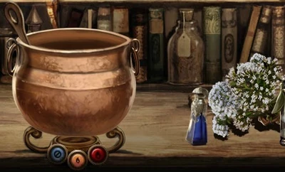

Про дисципліну

Зілєваріння (англ. Potions) - навчальна дисципліна, що вивчає різні зілля, настої, сироватки та інші рідкі магічні субстанції. Зіллєваріння вивчає також властивості цих рідин, способи їх приготувань і різні особливості інгредієнтів, що входять до них. Входить до списку іспитів на СОВ. Предмет дуже складний тим, що існує багато тонкощів у способі приготування того чи іншого зілля. І якщо одні зілля просто не відповідатимуть вимогам (на кшталт млинця, який вийшов грудкою: виглядає так собі, але їсти все-таки можна), то помилки в приготуванні інших можуть обернутися непоправними наслідками. Так, наприклад, випитий "Напій живої смерті", який зварили з незначними відхиленнями від рецепта, може призвести до летального результату.
Необхідне обладнання
- Котел
- Ваги (латунні)
- Флакони (скляні або кришталеві)
- Чарівна паличка
- Підручник
- Пергамент
- Перо
- Інгредієнти